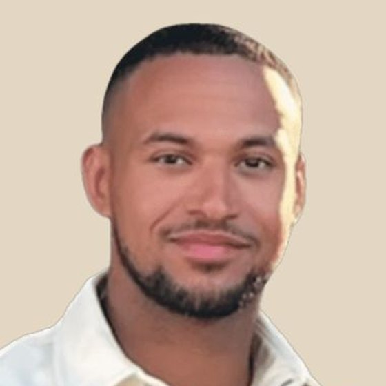
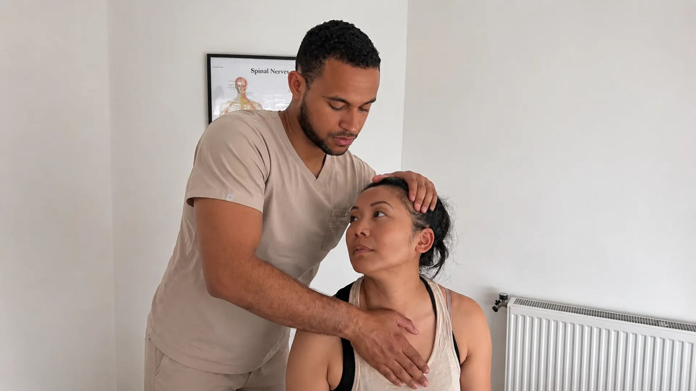
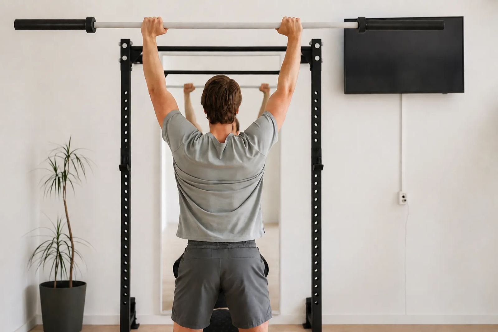
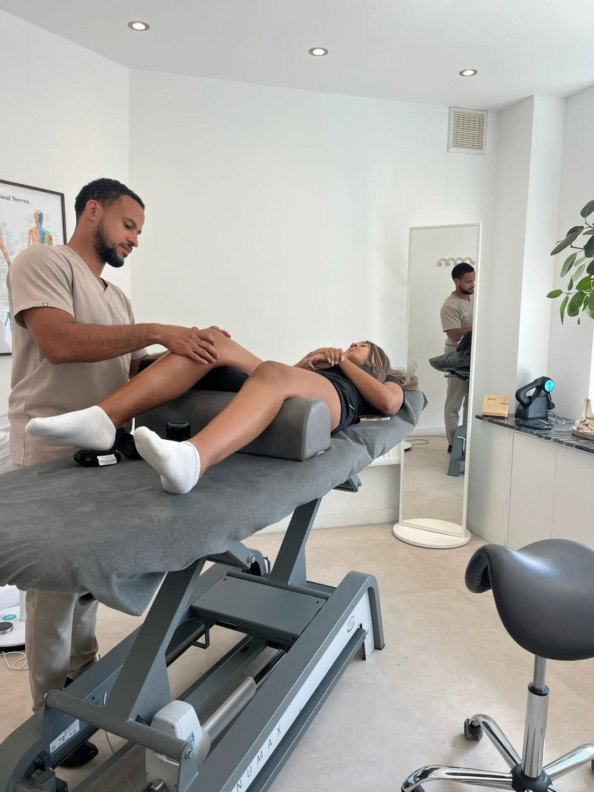
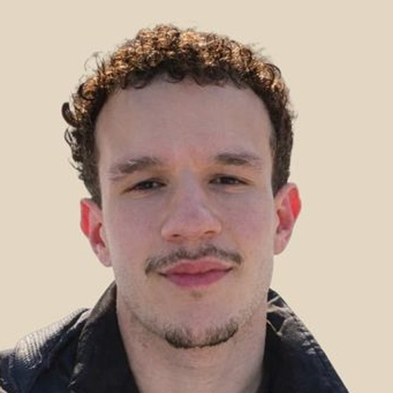
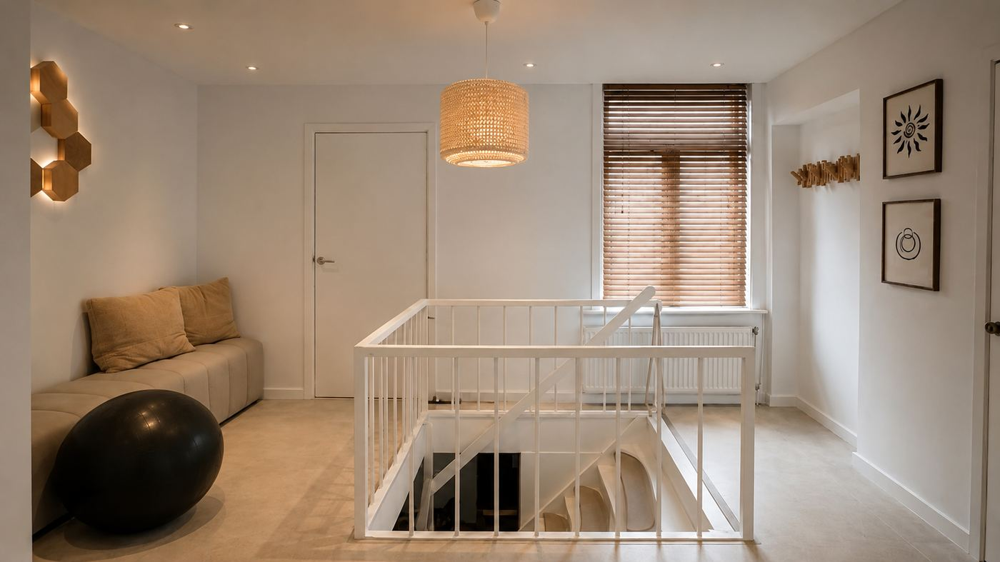
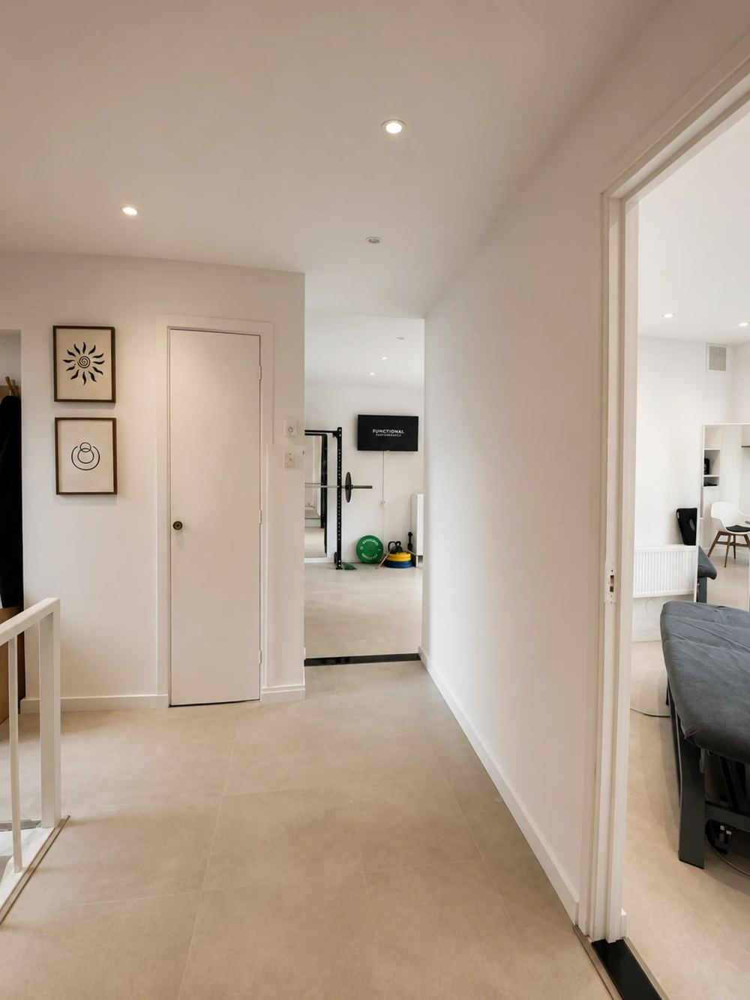

Dinish Everitz
Fysiotherapeut · Oprichter
BIG 99928054104
Achtergrond in karate, sport en fysiotherapie. Sportgerelateerde fysiotherapie, revalidatie en herstel.
Ma–do 07:30–21:00 · vr 07:30–18:00 · weekend gesloten
Rotterdam Noord & Centrum
Voor klachten aan nek, schouder, rug of knie, en voor sporters die weer terug willen op hun niveau. Twee locaties, één vast team en een eigen gym voor actieve revalidatie.
Al onder behandeling? Plan je vervolgafspraak

Online afspraak
Je ziet meteen de vrije tijden. Twijfel je over je klacht of de vergoeding? Stuur een WhatsApp, dan bellen we je dezelfde dag terug.
Waar heb je last van?
Functional Performance is een fysiotherapiepraktijk in Rotterdam. We helpen mensen met alledaagse klachten aan nek, schouder, rug of knie, met sportblessures en met revalidatie na een operatie. Tijdens de behandeling wisselen we onderzoek, hands-on therapie en oefeningen af.
Je kunt terecht voor fysiotherapie in Rotterdam Noord en Blijdorp of op onze locatie in Rotterdam Centrum. Sport je? Lees meer over sportfysiotherapie in Rotterdam.
Lage rugpijn, hernia-klachten, stijve nek of uitstraling.
Pijn bij traplopen of squatten, meniscus, revalidatie na ACL-operatie.
Rotator cuff, impingement, frozen shoulder, pijn boven het hoofd.
Liespijn, bilpijn, heupartrose of adductorenklachten bij sport.
Peesklachten, runner's knee, tennisarm, shin splints.
Hardloop-, kracht- of vechtsportblessure die niet wegtrekt.
Sterker terugkomen na een operatie of blessure.
Objectieve tests voordat je weer volledig gaat trainen.
Zo werken we
Je ziet zoveel mogelijk dezelfde behandelaar: iemand die jouw verhaal kent, van eerste afspraak tot laatste controle.
We nemen de tijd voor je verhaal en onderzoeken wat er speelt: belasting, kracht, techniek.
Je hoort wat we verwachten en hoeveel sessies daarbij horen. Zodra je doel bereikt is, stoppen we.
Hands-on therapie gecombineerd met oefeningen in de eigen gym, tot je weer kunt wat je wilt.


Meer dan fysiotherapie
Op beide locaties, vaak vergoed vanuit je aanvullende verzekering.
Meer lezen Personal trainingKracht en belastbaarheid opbouwen met een fysiotherapeut naast je.
Meer lezen MassageBij stijve spieren en na het trainen.
Meer lezenOok bij ons: Leefstijlcoaching Fysiotherapie aan huis Samenwerkingen
Het team
We zijn een klein team, dus je ziet steeds dezelfde gezichten. Alle fysiotherapeuten zijn BIG-geregistreerd.

Fysiotherapeut · Oprichter
BIG 99928054104
Achtergrond in karate, sport en fysiotherapie. Sportgerelateerde fysiotherapie, revalidatie en herstel.
Fysiotherapeut
BIG 69926665004
Topsportachtergrond in karate en volleybal. Bewegingsleer en sportpsychologie in één behandeling.

Fysiotherapeut
BIG 69938890604
Karate, krachttraining en massagetherapie. Een scherp oog voor weefsel en herstel.
Onze praktijk
Rustige behandelkamers en een eigen gym. Mensen komen hier voor een behandeling, maar net zo vaak om te oefenen en stap voor stap sterker te worden.


Ervaringen van onze patiënten
“Dinish neemt de tijd voor de intake en stelt de juiste vragen. Hij luistert niet alleen naar de klacht, maar ook naar de onderliggende oorzaak.”Giovanni Bozuwa · via Google
Kennisbank
Een review van 70 studies zocht uit of de ene oefenvorm beter werkt dan de andere.
Een grote trial in The BMJ vergeleek injecties met een nepbehandeling.
Wat spierremming en spierverlies ermee te maken hebben, en wat NMES kan toevoegen.
Locaties & openingstijden
Beide locaties zijn goed bereikbaar met OV, fiets en auto. Direct toegankelijk, geen verwijzing nodig.
Veelgestelde vragen
Staat je vraag er niet tussen? Bel ons direct of stuur een bericht via WhatsApp.
Nee. Fysiotherapie is in Nederland direct toegankelijk (DTF). Je kunt ons rechtstreeks bellen of online een afspraak plannen, vaak kun je binnen 24 uur terecht.
We hebben contracten met alle grote zorgverzekeraars in Nederland. Vanuit een aanvullende verzekering wordt fysiotherapie meestal volledig vergoed. Het makkelijkste is om je polis te checken in de app van je zorgverzekeraar, daar zie je precies hoeveel behandelingen je nog over hebt.
Een reguliere zitting duurt 25 minuten. De eerste afspraak (intake + onderzoek) duurt 60 minuten. Dan nemen we de tijd voor je verhaal en het onderzoek, en maken we samen een plan.
Een reguliere zitting kost € 49,00 (tarief 2026). Een uitgebreid intake-onderzoek € 60. Bekijk de volledige tarievenlijst op onze tarievenpagina.
Dat hangt af van je klacht en doelen. Na de intake krijg je een eerlijk advies, meestal 4 tot 8 sessies. Geen onnodige afspraken: zodra je doel bereikt is, stoppen we.
We zitten op Noorderhavenkade 158C (Rotterdam Noord) en Wijnhaven 66 (Rotterdam Centrum). Beide locaties zijn goed bereikbaar met OV, fiets en auto.
Ja, dat is precies onze specialisatie. Sportgerelateerde fysiotherapie, ACL- en knie-revalidatie, kracht- en performance-revalidatie, schouder- en overbelastingsklachten en begeleide return-to-sport. Of je nu hardloper, krachttrainer, kickbokser, kyokushin karateka, MMA- of andere vechtsporter bent: we bouwen door tot je sport, niet alleen tot je pijnvrij bent.
Ja. We begeleiden ook mensen met langdurige of complexe pijnklachten waarbij het verbeteren van bewegingskwaliteit, belastbaarheid en lichamelijk functioneren centraal staat. Onze aanpak blijft hetzelfde: grondig onderzoek, eerlijk plan, opbouw die past bij jouw lichaam en jouw doel.
We zijn doordeweeks geopend en plannen afspraken in op een tijd die voor jou werkt. In het weekend zijn we gesloten.
Vaak binnen 24 uur. Bel ons of plan online, bij urgente klachten doen we ons best om je dezelfde dag te zien.
Je verzekeringspas, een ID-bewijs en (indien aanwezig) een verwijsbrief of eerdere onderzoeksgegevens. Trek makkelijk zittende kleding aan waar we de klacht goed in kunnen onderzoeken.
Ja, in overleg. Voor mensen die niet naar de praktijk kunnen komen behandelen we aan huis in een deel van Rotterdam. Met een indicatie aan huis op je verwijzing vervalt de toeslag voor het huisbezoek. Kijk op de pagina Fysiotherapie aan huis voor hoe het werkt.
Eerste stap
Plan een intake van 60 minuten. We luisteren, onderzoeken en bouwen samen een traject, geen standaard sjabloon.
Al onder behandeling? Plan je vervolgafspraak